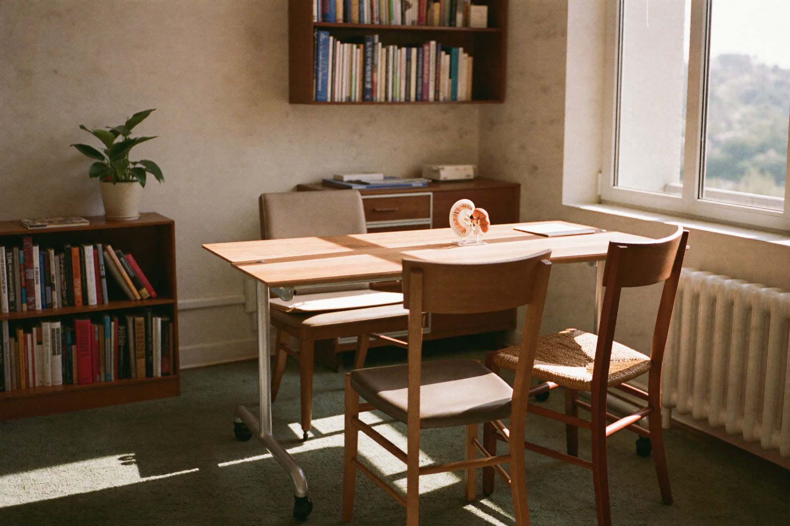
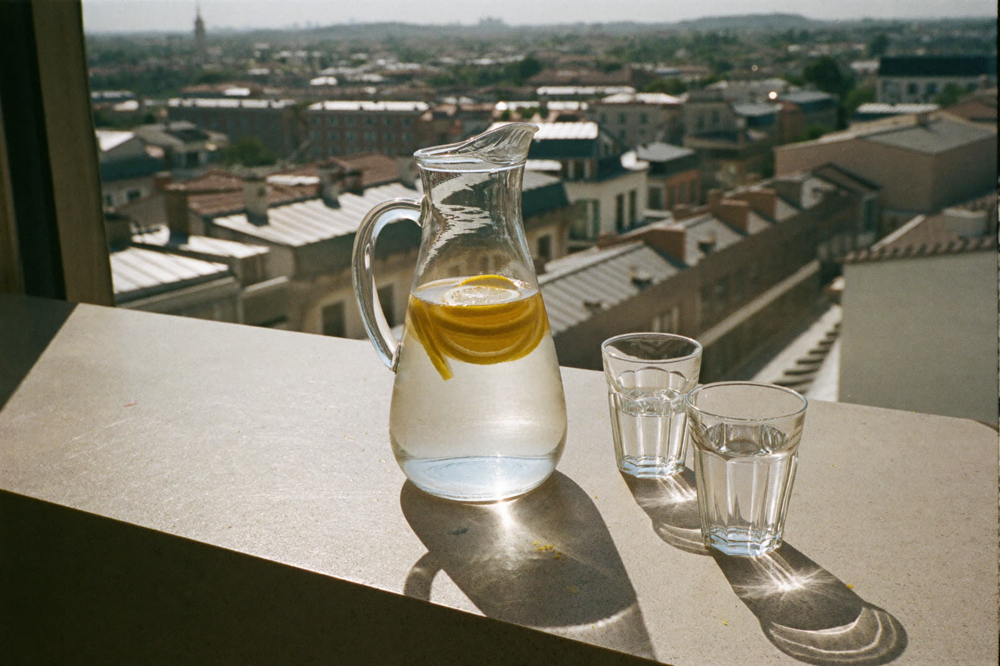
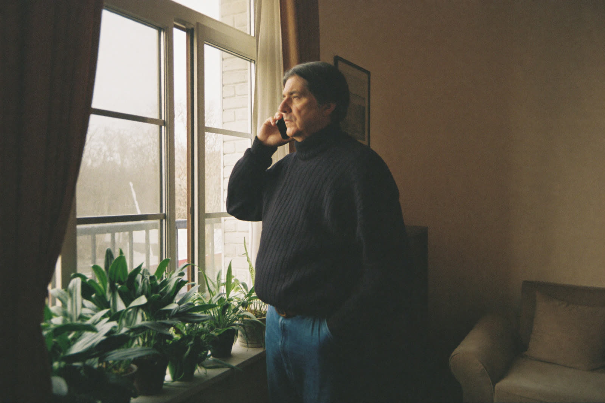
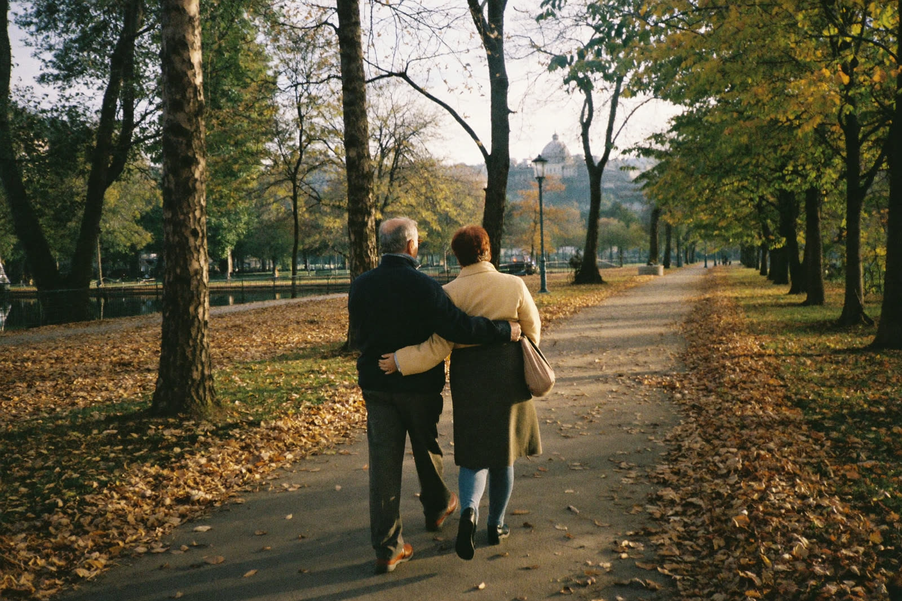
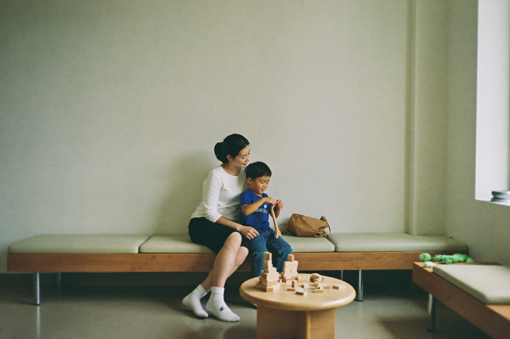
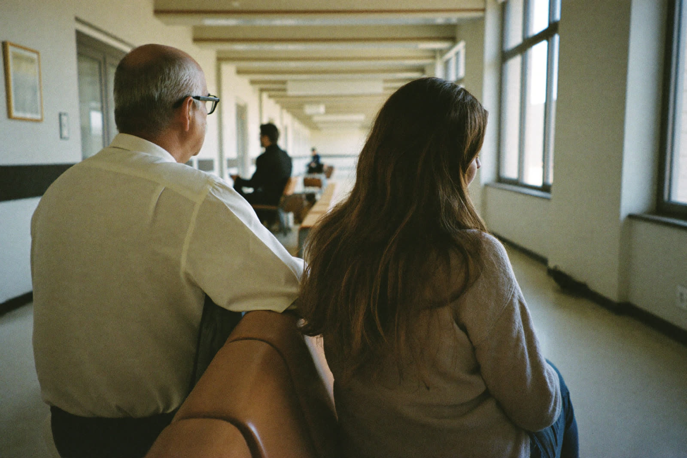
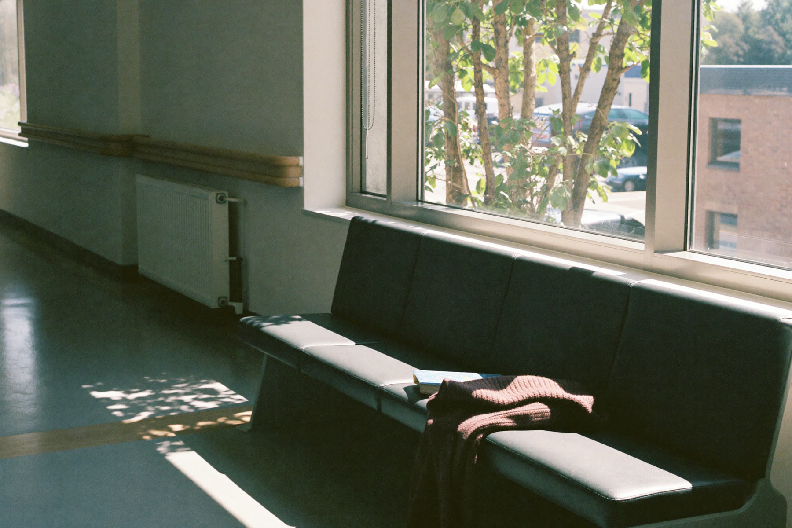

İlk adım, sizi dinlemek.
Prostat, böbrek taşı, ürolojik kanserler ve çocuk ürolojisinde sade bir dille bilgi; kılavuzlara dayalı tedavi.
 Prof. Dr. Kaan GökçenÜroloji uzmanı, Medical Park Göztepe
Prof. Dr. Kaan GökçenÜroloji uzmanı, Medical Park Göztepe
- Dinleme. Şikâyetler, geçmiş ve kullanılan ilaçlar ayrıntılı konuşulur.
- Muayene. Gerekli tahlil ve görüntülemeler planlanır.
- Birlikte plan. Seçenekler, riskler ve sonraki adım anlatılır.
Temsilî görsel, yapay zekâ ile üretilmiştir.
Nereden başlamak istersiniz?
Şikâyetinizi seçin; ilgili rehber sade bir dille neyin önemli olduğunu ve sonraki adımı anlatır.







Hekiminizle tanışın
Prof. Dr. Kaan Gökçen, üroloji uzmanıdır. Prostat büyümesinde holmiyum lazer enükleasyonu (HoLEP), böbrek, mesane, prostat ve testis kanserlerinde cerrahi tedavi, laparoskopik ürolojik cerrahi ve böbrek taşı tedavileriyle ilgilenmektedir. Hastalarını Medical Park Göztepe Hastanesi'nde kabul eder.
Muayeneye gelmeden önce
Küçük hazırlıklar, ilk görüşmede doğru karara daha hızlı ulaşmayı sağlar.
- İlaç listenizKan sulandırıcılar dahil, kullandığınız tüm ilaçlar ve dozları.
- PSA sonuçlarınızVarsa önceki değerler ve tarihleri.
- Görüntüleme raporlarıUltrason, BT ya da MR raporları ve mümkünse görüntüler.
- İşeme günlüğüÜç gün boyunca ne zaman ve ne kadar idrar yaptığınız.
- Eski ameliyat belgeleriEpikriz ve patoloji raporları.
- SorularınızAklınızdakileri önceden yazın, unutmazsınız.
Uzmanlık alanları
Altı alanda 24 rehber; her biri hekim tarafından yazılır ve güncel tutulur.

Prostat Hastalıkları
Prostat büyümesi, işeme şikâyetleri ve HoLEP başta olmak üzere tedavi seçenekleri.
3 rehber →Ürolojik Kanserler
Prostat, böbrek, mesane, testis ve böbreküstü bezi tümörlerinde tanı ve cerrahi tedavi.
9 rehber →Böbrek ve Üreter Taşları
Taşın boyutu ve yerine göre ilaç, şok dalgası ve kapalı lazer yöntemleri; yeniden oluşumu önleme.
5 rehber →Laparoskopik Cerrahi
Karında büyük kesi açmadan, küçük deliklerden kamerayla yapılan ürolojik ameliyatlar.
2 rehber →İdrar Kaçırma ve Mesane
Kadın ve erkekte idrar kaçırma, aşırı aktif mesane ve gece idrara kalkma.
2 rehber →Çocuk Ürolojisi
İnmemiş testis, hipospadias, reflü ve gece altını ıslatma gibi çocukluk çağı sorunları.
3 rehber →Son eklenen rehberler

Muayene yeri
- Hastane
- Medical Park Göztepe Hastanesi
- Adres
- Merdivenköy Mah. Nisan Sk. No:23, E5 Üzeri, 34732 Kadıköy, İstanbul
- Telefon
- 0530 510 74 35
- Çağrı merkezi
- 444 44 84
